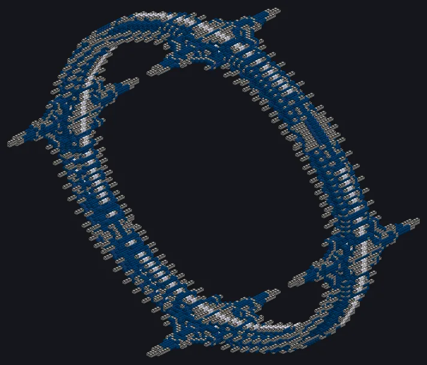
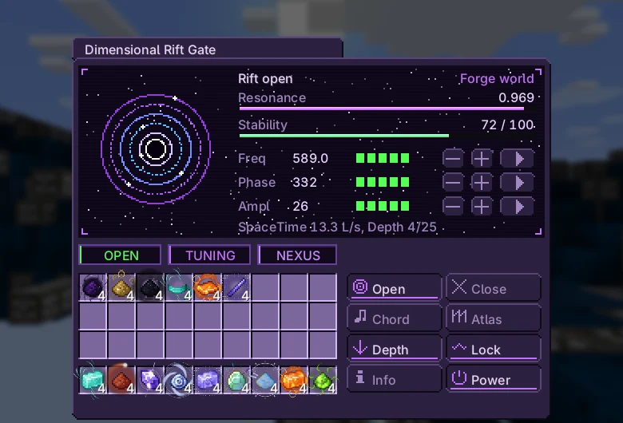
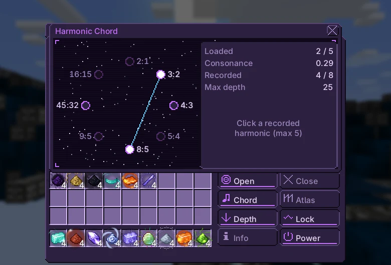
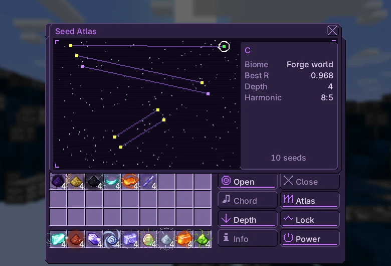

Dimensional Rift Gate¶

Opens a rift to a seeded dimension and pulls resources from it. Tune frequency, phase and amplitude towards the seed's hidden optimum to raise the resonance.
| Tier | UIV |
| Size | 126 × 126 × 54 |
| Energy | \(2^{36}\) EU/t from the owner's Nexus network while the rift is open |
| Fluid | SpaceTime (stability) |
| Controller | Assembly Line (UIV), research on the UIV Field Generator |
| Blocks | catalog page |
Structure and hatches¶
| Hatch | Max | Use |
|---|---|---|
| Input Hatch | 4 | SpaceTime |
| Input Bus | 4 | Rift Probes, Depth Anchors, Contained X-Nexus |
| Output Bus | 4 | biome dusts, Rift Singularity |
| Rift Tuning Hatch | 1 | redstone 0–15 sets the amplitude to 0–100% |
Tuning¶
Click Open for a rift with a random seed. Tune with [--] [-] [+] [++] (±10 / ±1). Each Rift Probe consumed narrows the tolerances by 20%.
\(f\) goes from 1 to 1000 THz, \(\varphi\) from 0 to 360° and \(A\) from 0 to 100%; \((f^*, \varphi^*, A^*)\) is the seed's hidden optimum and \(n\) the number of probes consumed on this seed. Each knob shows a hot/cold bar for its own axis.
| Probes | \(\sigma_f\) (THz) | \(\sigma_\varphi\) (°) | \(\sigma_A\) (%) | Window for R ≥ 0.9 in f |
|---|---|---|---|---|
| 0 | 260 | 100 | 45 | ±84.39 THz |
| 2 | 166.4 | 64 | 28.8 | ±54.01 THz |
| 4 | 106.5 | 40.96 | 18.43 | ±34.57 THz |
| 6 | 68.16 | 26.21 | 11.8 | ±22.12 THz |
| 8 | 43.62 | 16.78 | 7.55 | ±14.16 THz |
| 10 | 27.92 | 10.74 | 4.83 | ±9.06 THz |
Power and stability¶
Field = 2^36 EU/t from the Nexus network while open; without it the rift collapses
SpaceTime fluid keeps it stable: each litre adds 2 stability. Losses grow with low resonance and with depth.
\(S\) is the stability (0–100), \(D\) the depth, \(P\) the active pylons (4 in the current structure) and \(C\) the chord consonance (next section). The machine drains enough SpaceTime each second to cover the upkeep plus one unit; each litre of SpaceTime is worth 1/16 of a stability unit.
| R | D | SpaceTime (L/s), no chord, 4 pylons |
|---|---|---|
| 0.5 | 1 | 19.4 |
| 0.9 | 1 | 14.12 |
| 0.9 | 5 | 14.6 |
| 0.98 | 5 | 13.16 |
| 0.98 | 8 | 13.23 |
| 1 | 8 | 12.8 |
Harmonics¶
Holding R ≥ 0.9 for 30 s records the seed's harmonic. Click recorded harmonics to load up to 5 in the chord: consonant chords (octave, fifth) are stable; dissonant chords (tritone, minor second) dig deeper but cost more SpaceTime. Each recorded harmonic raises the maximum depth by 5 (base 5).
Holding R ≥ 0.98 for a minute can give a Rift Singularity. Stability at 0 collapses the rift; R under 0.2 for 10 s inverts it (−10 stability). Side tabs: Seismograph and Atlas.
\(h\) is the number of recorded harmonics. The table uses the five harmonics of the surface biomes (\(h = 5\), base 30).
| Interval | Ratio | Consonance | λ factor (alone) | Max depth (alone) | Recorded in |
|---|---|---|---|---|---|
| Octave | 2:1 | 1 | 0.3 | 15 | not dropped by any biome |
| Fifth | 3:2 | 0.39 | 0.91 | 22 | Crystal plains |
| Fourth | 4:3 | 0.28 | 1.02 | 31 | Spore forest |
| Major third | 5:4 | 0.23 | 1.07 | 36 | Mercury ocean |
| Minor sixth | 8:5 | 0.19 | 1.11 | 40 | Forge world |
| Minor seventh | 9:5 | 0.18 | 1.12 | 40 | Civilisation relic |
| Tritone | 45:32 | 0.1 | 1.2 | 48 | Antimatter abyss |
| Minor second | 16:15 | 0.13 | 1.17 | 45 | Void |
Endgame¶
Each biome drops dusts of its materials into the output buses. Rate of each material:
| Biome | Chance | Min. depth | Dusts |
|---|---|---|---|
| Crystal plains | 30% | — | Prismatium, Certus Quartz, Silicon, Titanium |
| Mercury ocean | 20% | — | Chronomercury, Gold, Thallium, Cinnabar |
| Forge world | 15% | — | Forgecore, Tungsten, Osmium, Iridium |
| Spore forest | 15% | — | Vivispore, Wood, Carbon, Phosphorus |
| Antimatter abyss | 8% | — | Abyssal Antimatter, Naquadah, Naquadah Enriched |
| Civilisation relic | 7% | 20 | Precursor Residue, Naquadria, Trinium, Duranium |
| Void | 5% | 40 | Void Ash, Neutronium, Space Time |
Exclusive: one material per biome (Prismatium, Chronomercury, Forgecore, Vivispore, Abyssal Antimatter, Precursor Residue, Void Ash). The Singularity goes into the Forge of Gods controller and Advanced+ Eye of Harmony fields.
Needs: from depth 40 on, each Depth Anchor also takes one Contained X-Nexus; without one it stays in the bus.
X-Nexus comes from the Antimatter Collider Ring; the Stellar Chamber needs your Forgecore to hold a magnetar.
Known issues
- Pylon cores are not in the game: the structure always counts 4 active pylons.
Report anything else on the issue tracker.
Screens¶
In-game screens of the current version, in English.


